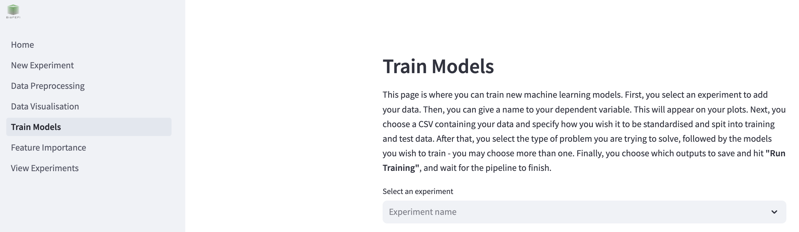
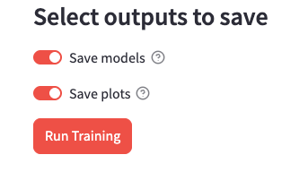

Training models¶
You can train new models in Helix by clicking on “Train Models” on the left hand side of the screen.

To begin, select your experiment from the dropdown menu where it says “Select an experiment”.
Configure Machine Learning Models¶
First, you can select whether you wish to use hyper-parameter search or not. If you use hyper-parameter search, Helix will search a pre-defined selection of hyper-parameters for each model to determine which produce the best performance. This will be based on accuracy for classification problems, and R squared (R^2) for regression problems. Hyper-parameter search is active by default. If you would like to manually set the hyper-parameters for your models, click the toggle to disable it. The hyperparameters will then appear when you select a model to train.
Selecting models to train¶
To select which models you wish to train, click the toggles next to the model type you wish to train. When you click a toggle, that model’s configurable hyper-parameters will appear underneath that toggle. You may train more than one model at a time.
Depending on whether your problem type, which was configured on the New Experiment page, the models will either be a classifier or a regressor.
Options¶
When using automatic hyper-parameter search, you will not be able to set any of these options. They will be determined automatically.
Mulitple Linear Regression with Expectation Maximisation
Train a Multiple Linear Regression model which uses Expectation Maximisation for feature selection and parameter estimation. This is only available for regression problems.
Alpha (relgularisation): the regularisation parameter.
Maximum Beta: Will test beta values between 0.1 and this value.
Weight Threshold: Features with weights below this value will be discarded.
Max Iterations: the maximum number of expectation maximisation cycles to be performed during training.
Tolerance: When the change predictions between model predictions and true target values falls below this value, training stops.
Linear Regression
Train a Linear Regression model. This is only available for regression problems.
Fit intercept: if true, the model will calculate the y-intercept to use in the predictions. If not, the data must be centered.
Logistic Regression
Train a Logistic Regression model. This is only available for classification problems.
Fit intercept: if true, the model will calculate the y-intercept to use in the predictions. If not, the data must be centered.
Random Forest
If the problem type is “Classification”, train a Random Forest Classifier model. If the problem type is “Regression”, train a Random Forest Regressor model.
Number of estimators: The number of decision trees in the forest.
Minimum samples split: The minimum number of samples to split an internal node.
Minimum samples leaf: The minimum number of samples required to be a leaf node.
Maximum depth: The maximum depth of the tree. If disabled or 0, then nodes are expanded until all leaves are pure or until all leaves contain less than ‘Minimum samples split’.,
XGBoost
If the problem type is “Classification”, train a XGB Classifier model. If the problem type is “Regression”, train a XGB Regressor model. The parameters for this model are all optional. To congiure them, check the “Set XGBoost options” box.
Number of estimators: The number of boosting rounds.
Learning rate: Boosting learning rate.
Subsample size: Subsample ratio of the training instance.
Maximum depth: The maximum depth of the base learners. If disabled or 0, then nodes are expanded until all leaves are pure.
Support Vector Machine
If the problem type is “Classification”, train a SVM Classifier model. If the problem type is “Regression”, train a SVM Regressor model.
Kernel: The kernel type for the algorithm.
Degree: The degree for the polynomial kernel - ignored if not using the polynomial kernel.
C: Regularisation parameter.
Saving the outputs¶
You have the option to save the models and the plots to disk. Click the toggles to turn on/off.

Train¶
Once you have configured which models to train, hit the “Run Training” button.